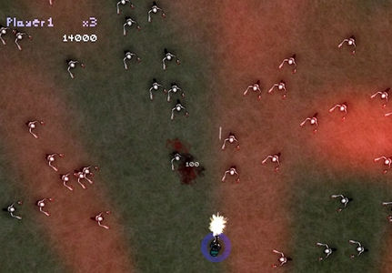
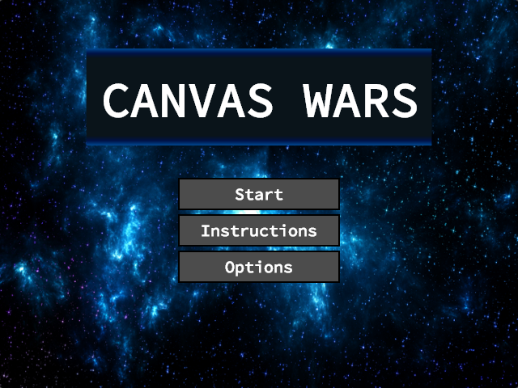

Abstract:
The goal of this project was to create my own rich media web application utilizing canvas and javascript. The game I have created is a single-player top-down shooter utilizing blastem as a base, expanding upon it through the following features:
Play Canvas Wars
Phase 1 Design:
I had originally planned to make this a top-down shooter with zombies, with the following criteria:
A life system from the player
A health system for the player and the enemy
UI features including menus and a health bar
A gun (or more than one) with animation effects for shooting (ammo is unlimited)
Players can aim and shoot with the mouse, move with WASD
Enemies seek the player, dealing damage at a fixed rate while contacting the player
Expected sounds for gun, zombie moans, BGM, etc.
Game objective is to survive against zombie hordes as long as possible to achieve the highest possible score
Each game is played in Waves, where there are an increased number of enemies at increased health
Game is played until player runs out of lives
Something reminiscent to "I Made a Game With Zombies In It":

Phase 2 Design:
The more I coded the game, the more I felt I was recreating something reminiscent of Geometry Wars, so I ended up changing my idea to fit along more so along the theme of blastem (while maintaining almost all of the mechanical elements listed above), completing it as a space-shooter.

Here's how I met all the Required Design Elements:
Animations and other Graphical effects:
I made sure to pimp out blastem with a nice smooth UI and color scheme
Images - Background, Ship, Enemy
Gradients - Title and Menu screens
Explosion Animation - Enemy explosions
User Input & Feedback:
The player interacts with the game through the following:
Keyboard - Movement, Pausing
Mouse - Aiming, Shooting
Buttons (created by me) - Navigation
Sound:
I really liked the original blastem sounds, so I kept them.
BGM - Short techno loop
Bullet Fire - Laser-like sound
Enemy Explosion - Flame sound
Performance:
Runs very smoothly and without error.
Usability:
There are 6 Game States, each having the ability to navigate through buttons:
Start → Game, Instructions or Options
Instructions → Start
Options → Start
Pause → Game or Start
Game → (Through button press) Pause or Game Over
Game Over → Game or Start
Citations:
The only material or code that I used that was not created by me or was used in this class was the background image (cited above).
The completed blastem ICE was used as a base for this project
Difficulty:
This is the game's key feature and key element of fun. The game continuously ramps up the spawn rate of the enemies, allowing players to feel as challenged as needed. It's also extremely fun once it really starts getting crazy, as you'll still be pressured to dodge and kill enemies even after you master the controls.
Key Design Decisions:
I recreated blastem with a Geometry Wars-like control scheme and feel to it, adding in some features of my own.
Randomness for varied gameplay:
Enemies randomly spawn from one of the eight cardinal directions bordering the canvas
Enemies spawn at a random rate, with a spawn chance that increases slightly with every wave
Enemies spawn with a random speed
The randomness element of this game is part of what makes this game fun and challenging, also adding a luck factor.
Skill-based gameplay:
Some of the normal strategies for most top-down shooters are to stay in one location on the map where you have the least amount of enemies coming after you at a time, or the smallest relevant field of vision needed to shoot down enemies. My game eliminates that possibility through the following features:
Enemies are fast enough to overwhelm the player in later waves if they choose to try to camp in the center of the map.
Enemies spawn randomly at the edges so players cannot remain close to the corners or edges for very long without taking damage by newly spawned enemies that are extremely difficult to react to. than if they were closer to the middle.
Other skill-based features:
The bullets are small enough for the player to have a chance to miss an enemy when shooting in its general direction, forcing the player to learn better aim if they desire to perform better.
Players will need to learn how to manipulate the seeking functionality of the enemies to their advantage in order to continue to survive later waves as the spawn rate continues to increase.
Basically, the game forces you to move around, aim well, and hone a good reaction time along with good hand-eye coordination. I'd say that's pretty successful for a top-down shooter.
Notable Programming Decisions:
Buttons:
I redesigned an older button design that I had made for another project in Processing that I was really proud of:
The buttons dynamically resize and scale to their height value
The buttons automatically do the proper calculations to perfectly center any font to the center of the button.
The buttons are also responsive to when a mouse hovers over it, lighting up upon mouse enter.
Mostly everything scales for easy tweaks:
Since fine-tuning a ton of values is very tedious work, I took the liberty of standardizing most values of objects I created so that they scaled well with the screen and each other. This way if I ever needed to change most values (such as size) of a group of objects, I could do so with a few quick and simple clicks, as opposed to having to reset each one individually every time.
GameState code is super-optimized and sleek:
I was able to create and reuse 6 different buttons for the entire project, and in such a way that I only had to include the code to check each of those buttons once at the end of the drawing loop.
The menus are created simply with one line of code that references drawLib
The only tedious code that exists within the GameStates are the text and soundToggleButton shadow.
Issues & Room for Improvement:
The only real issue I had with creating this game was figuring out how to get the player to rotate properly by tracing the mouse position. I felt that once I tackled that wall, everything else fell smoothly into place afterwards, even though it still took some time to fine tune everything.
As for improvement, I'd say I could continue along the Geometry Wars route and just recreate that, even though it would be a different game than the one I have now. But as for tweaking this game, I feel that I could add some more wave variance functionality, however I can't quite picture what that would be without completely changing the current dynamic of the game. Otherwise, I think I did a great job with what were were allowed to work with in creating a nice look-and-feel, engaging gameplay, and well-designed, commented and formatted code.
Navigation:
{kind=link}